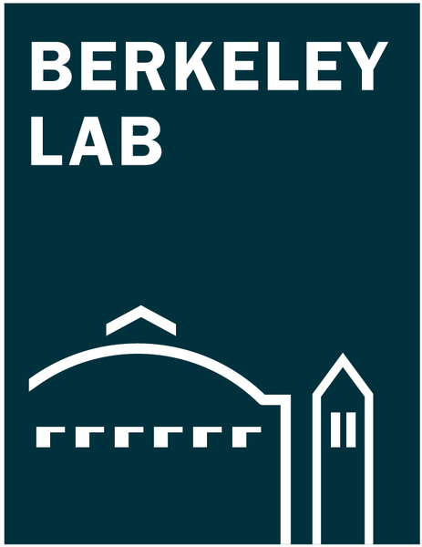

AI for Autonomous Particle Accelerators

Lawrence Berkeley National LaboratoryI am a Researcher at Lawrence Berkeley National Laboratory (LBNL) developing intelligent algorithms and autonomous control systems for large-scale scientific infrastructure. My work bridges large language models, agentic systems, and high-energy physics to enable self-optimizing operations in safety-critical environments.
Previously a Senior Data Scientist at the Helmholtz Association (DESY/XFEL), I pioneered the use of domain-specific language models in scientific contexts. Holding a Ph.D. in Computer Vision from the University of Konstanz, I actively apply the mathematical rigor of high-dimensional signal processing to extract actionable insights from the complex, multi-modal machine states of modern particle accelerators.
A scikit-learn style Python library providing a geometric approach to learning composable, highly interpretable representations of discrete event sequences.
A framework introducing Differentiable Modal Logic for PyTorch—enabling the training of Modal Logical Neural Networks (MLNNs).
A lightweight framework for solving PDEs in one shot via Fourier features with exact analytical derivatives. It bypasses automatic differentiation and iterative training loops for linear and nonlinear problems.
Automated data collection and fine-tuning pipelines designed to adapt Large Language Models securely to the complex domains of particle accelerators.
A. Sulc
ICLR 2026 : Advances in Financial AI
A. Sulc
arXiv preprint, 2026
A. Sulc
ICLR 2026: AI & PDE
A. Sulc
arXiv preprint, 2026
T. Hellert, D. Bertwistle, S. C. Leemann, A. Sulc, M. Venturini
Physical Review Research, 2026
T. Hellert, J. Montenegro, A. Sulc
APL Machine Learning, 2026
A. Sulc
NeurReps 2025 PMLR Proceedings (to appear)
A. Sulc, T. Hellert, A. Reed, A. Carpenter et al.
16th International Particle Accelerator Conference (IPAC'25)
A. Sulc, P. Connor
EPS-High Energy Physics, 2025
A. Sulc, P. Connor
42nd International Conference on High Energy Physics (ICHEP 2024)
A. Sulc, T. Hellert